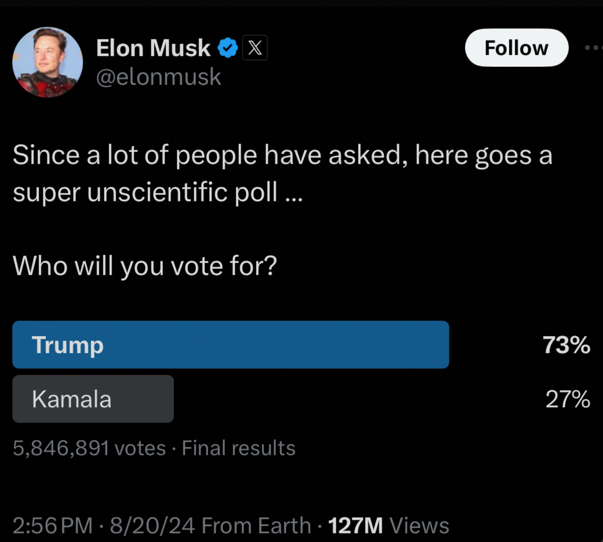
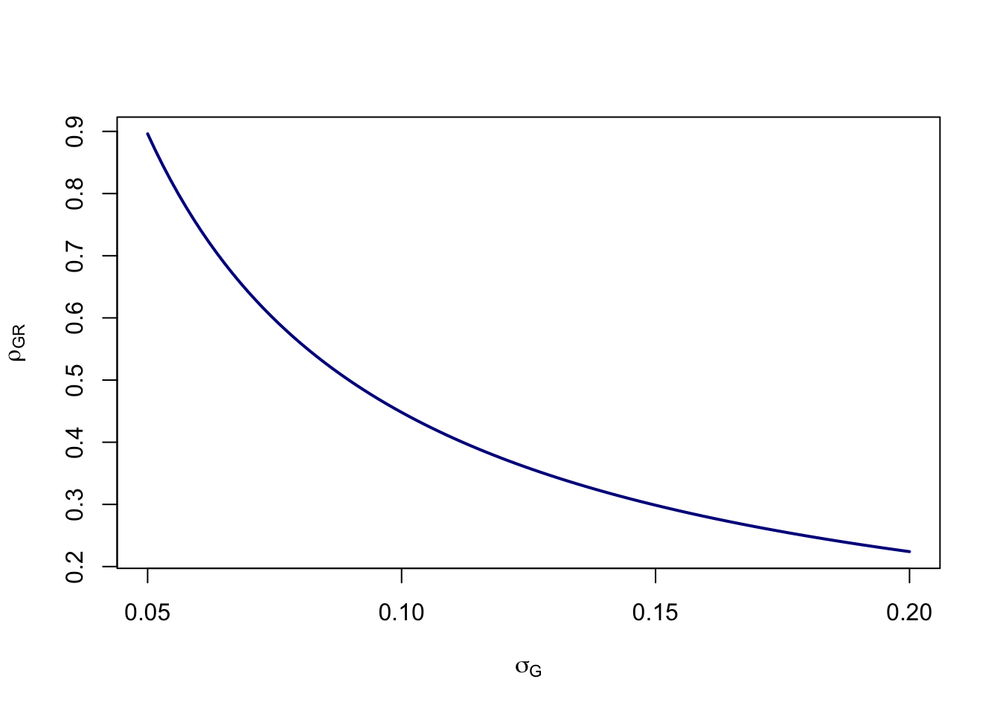

0.23/(sqrt((160-5.85)/5.85)*0.05) [1] 0.8961155James Holland Jones
August 24, 2024
I decided to do a cocktail-napkin calculation this morning, as one does. Since Elon Musk bought the social-media platform formerly known as Twitter in October of 2022, there has been a clear shift to the right that many commentators have noted. Earlier this week, on the second day of the Democratic National Convention, Musk posted a Twitter poll about users’ preferences between the two presidential candidates, Harris and Trump. His poll, which collected nearly 5.85 million votes, revealed a 73% to 27% preference for Trump. Musk noted that the poll was “super unscientific,” but the vibe of the whole thing was that he was presenting the truth that the mainstream media is afraid to print. This has led some to worry that this is part of the ground game for claiming a rigged election if Trump loses.
Most polls indicate that the race is, in fact, very tight, with the two candidates in a nearly even race, though the most recent polls suggest a small advantage for Harris. This implies that Musk’s poll differs from the overall consensus by around 20-25 percentage points.
As with many others, I wondered if maybe this poll is telling us more about the composition of Twitter than it is about the US presidential election. There is good evidence that the platform has shifted substantially to the right. Musk’s own posts have also shifted considerably toward right-wing topics.
In 2018, the Harvard statistician Xiao-Li Meng wrote a paper where he coined the term The Big Data Paradox, where “the more the data, the surer we fool ourselves.” Appropriately enough for our current problem, Meng was trying to understand why the polls seemed to be so wrong in the 2016 US presidential election. Most polls had Trump losing and, of course, that didn’t actually happen.
That was about the time that our collective infatuation with big data was also taking off. The thinking that you don’t have to look hard to find is that with enough data, we don’t have to worry about tedious things like sampling design or measurement error. Generally there is some vague gesturing toward the Law of Large Numbers or the like.
Suppose we have a sample of size \(n\) of a population of size \(N\) and we want to estimate some quantity (such as the share of a population’s vote) \(G_N\) from a our sample estimate \(\bar{G}_n\).
Meng derived an identity that shows that there are three (and only three) factors that determine the estimation error for some quantity of interest. These are:
Data quantity represents both the size of your statistical sample (\(n\)), but also the size of the population for which you are making your inference (\(N\)). You can think of those together as the fraction of the population sampled, \(f=n/N\).
The difficulty of the inference problem is given by the standard deviation of your quantity of interest (\(\sigma_G\)). Meng notes that if \(\sigma_G=0\), your inference problem is easy since you only need a sample size of \(n=1\) to infer it perfectly. As the standard deviation gets bigger, you need an increasingly large sample to make a good estimate.
The last quantity, data quality, is probably the most interesting. It is the correlation between the outcome (\(G\)) and the sampling mechanism (\(R\)). We can call this \(\rho_{G,R}\).
\[ \bar{G}_n=\frac{1}{n} \sum_{j \in I_n} Y_j=\frac{\sum_{j=1}^N R_j G_j}{\sum_{j=1}^N R_j}, \] Here \(I_n\) is a size-\(n\) subset of \(\{1, \ldots , N\}\) (i.e., your sample) and \(R_j=1\) when \(j\) is in the set \(I_n\) and zero otherwise.
When we gather a traditional design-based or model-based sample, the \(R_j\) are random. However, for a convenience sample (like social media users responding to a poll), they are not random. Meng (2018: 689) writes: “For many Big Data out there, however, they are either self-Reported or administratively Recorded, with no consideration for probabilistic sampling whatsoever. Even in cases where the data collector started with a probabilistic sampling design, as in many social science studies or governmental data projects, in the end we have only observations from those who choose to Respond, a process which again is outside of the probabilistic sampling framework. These”R-mechanisms” therefore are crucial in determining the accuracy of \(G_n\) as an estimator of \(G_N\)“.
We can put this all together to show that the estimation error (i.e., the difference between our sample estimate and the population value) is given by the following remarkably simple formula:
\[ \hat{G}_n - \hat{G}_N = \rho_{G,R}\;\; \times\;\; \sqrt{\frac{N-n}{n}}\;\; \times\;\; \sigma_G \]
If \(\rho_{G,R}\) is zero because your response indicator is random, then you have an unbiased estimate.
We can apply this decomposition to Elon Musk’s poll.

I used the following values: 154.6 million people voted in the presidential election in 2020. Turnout has been trending up, so we can use an estimate of \(N=160,000,000\) (using a bigger value for \(N\) makes the estimate more conservative). From the screen-captured image from Twitter, we can see that around 5.85M voted in the poll. As I noted above, \(d = G_n - G_N = 0.23\) (ish). I’m less certain about what a sensible value for the standard deviation of \(G_N\) is, but polls typically have a 5% “margin of error,” which seemed like as good a place to start as any. So now all we have to do is plug in and solve for \(\rho_{G,R}\). The correlation I get is
That seems like an absurdly high correlation. I was convinced that it had to be wrong, but if the input numbers are even approximately right, that correlation has to be very high to get such a big difference between the polling consensus of a very close race and the result of Musk’s Twitter poll with its value of approximately +50 for Trump. Now, of course, this assumes that the polls are a better reflection of reality and it was the failure of polls in 2016 that led to Meng’s paper in the first place. I am neither political scientist nor survey researcher, so I won’t comment on the quality of the current polls. But seriously, does anyone really believe that Trump has a large lead over Harris in our current social and political climate? I certainly hope that we’ve learned from our previous experience that big data do not guarantee correct inference and it certainly doesn’t obviate the need for proper sampling!
We can try various values of \(\sigma_G\) as in the figure below. The high values of the standard deviations seem unlikely, given that the largest popular-vote margin since 2000 was 7.4% (Obama in 2012). Of course, it’s entirely possible that \(G_N\) isn’t 0.5 either. Reducing the error from the value of \(d=0.23\) to something lower (suggesting that Trump actually has a substantial lead among future voters) reduces the correlation in a linear fashion. However, in all of these cases, the value of \(\rho_{G,R}\) remains relatively high compared to estimates of Meng (2018) or, e.g., the estimate of COVID vaccine uptake from Facebook surveys as reported by Bradley et al. (2021).
calc_meng <- function(n=5.85e6,N=160e6,d=0.23,sigma) d/(sqrt((N-n)/n)*sigma)
sig <- seq(0.05,0.2,,100)
plot(sig, calc_meng(sigma=sig), type="l", lwd=2, col="blue4",
xlab=expression(sigma[G]),
ylab=expression(rho[GR]))
But let’s be clear here: the value of the correlation is so high because the difference between Musk’s poll and the general polling consensus is so huge. Note also that this difference is even greater if Harris is actually leading as suggested by recent national polls.
Meng (2018) found that a minuscule correlation of \(\rho_{G,R}=-0.005\) for self-reported voting for Trump in 2016 in the Cooperative Congressional Election Study was enough to mess up the polls and catch everyone with their pants down. Bradley et al. (2021) estimated correlations between approximately 0.003 and 0.009 for the Delphi-Facebook COVID symptom tracker in the winter and spring of 2021, which overestimated actual vaccine uptake by approximately 14-20 percentage points. What does this much higher estimate (in absolute value) from Twitter mean for its composition in general?
Honestly, I don’t know. It certainly suggests that people who follow Musk (and therefore were more likely to see the poll) are strongly biased to the right. Does that mean that Twitter as a whole is? Maybe. The next question, of course, is how representative Musk’s 193M followers are of the platform as a whole. But the algorithmic amplification of the site’s most-followed user means that even people who don’t follow Musk probably saw the post. I guess the bare minimum take-away here is to be very skeptical of Twitter polls that are meant to shed light on features of the general population.
It does seem clear that the platform formerly known as Twitter has become a hotbed of misinformation. Here is a helpful timeline of the changes in Twitter and Musk’s posting habits. It’s sad to watch. There was a time there when Scientific Twitter was an amazing place for communicating results and connecting to other scientists and science writers. I miss it.